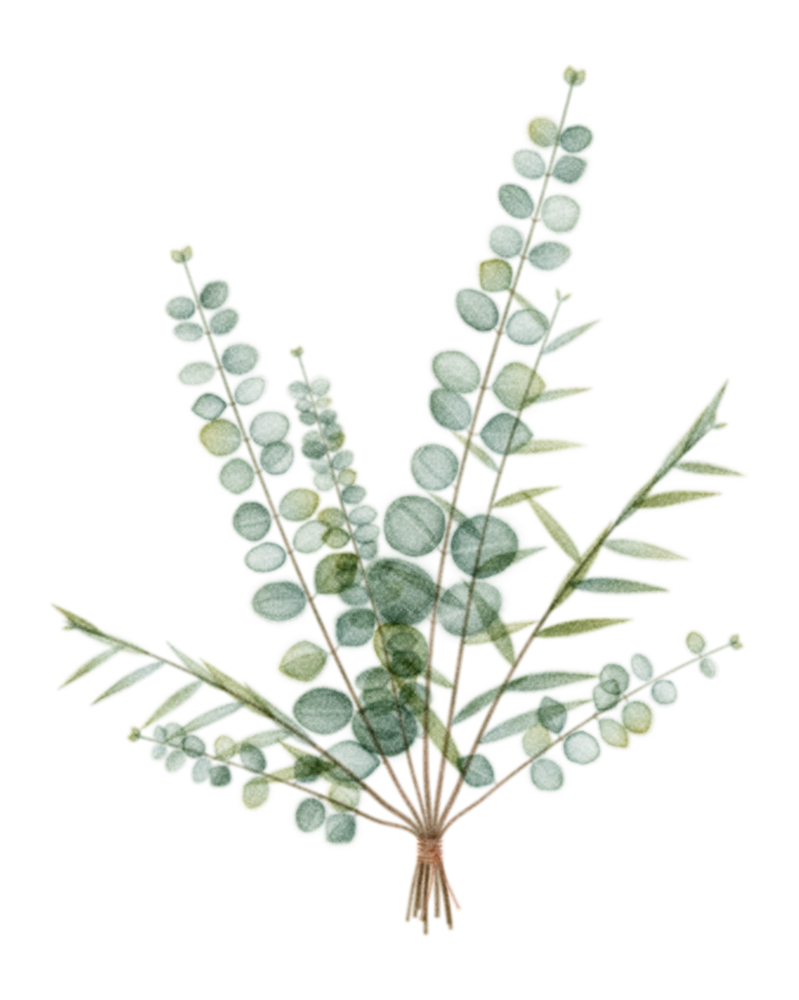

About Tessa
Hi, I’m Tessa.
A birth doula in Hidden Valley Lake, California, serving Lake and Sonoma Counties—and a mama to five boys.

My story
I came to this work through my own births.
I’ve written birth plans, learned to speak up for myself in the birth room, and felt firsthand what it means to be truly heard—and what it costs when you’re not. That experience is why I’m here: to support pregnant people in having the empowered, transformative birth they want, not the birth anyone else decides for them.
What that looks like with me: a warm, steady presence who listens first and follows your lead. Your values and your voice set the course. My job is to honor them—sharing evidence-based information honestly, and speaking up alongside you when it matters.
Every family deserves that kind of care: without judgment, and with deep respect for who you are and where you come from.
When I’m not attending births or working through the doula reading list, you’ll find me baking, swimming with my boys, or curled up with a book.
My approach
What it looks like to work together.
-
Listen first
The first thing I want to know is what matters to you—not what a checklist says.
-
Follow your lead
Your values and preferences set the course. I’m here to support your decisions, not make them.
-
Share information honestly
I’ll share what the evidence says in plain language—including when the answer is “it depends.”
-
Speak up with you
Advocacy is not speaking over you. It’s helping your voice be heard and asking the questions you want asked.
-
Make room for your people
Your partner, family, and care team all have a place. I’ll help them support you in the way that feels right.
-
Keep it judgment-free
Every family deserves respect—without judgment about your body, your choices, or the way you build your family.
Training and background
Prepared, honest, and still learning.
I completed the DONA-approved Birth Doula Workshop with Birthing Gently, taught by Tara Campbell.
I’m currently working toward DONA certification (CD(DONA)), which includes attending three births as a doula, completing the required reading, and submitting documentation to DONA.
I’m based in Hidden Valley Lake and serve families throughout Lake and Sonoma Counties. My focus now is birth support; postpartum and lactation offerings are planned for later.
Before services begin, I’ll name a backup doula so support continues if I’m unable to attend your birth.
- Based in
- Hidden Valley Lake, California
- Serving
- Lake and Sonoma Counties, California
- Training
- DONA-approved Birth Doula Workshop · Birthing Gently, with Tara Campbell
- Certification
- Working toward CD(DONA)
- Focus
- Birth support; postpartum and lactation planned for later
- Family
- Mama to five boys
I’d love to hear about your birth.
A free consultation is a relaxed chance to ask questions, talk through what you’re hoping for, and see whether we’re a good fit.